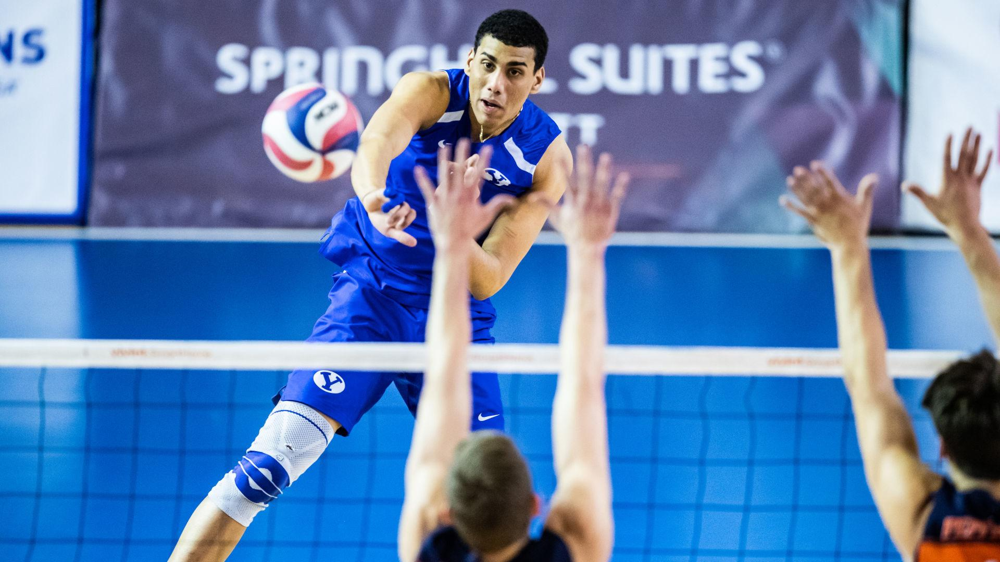
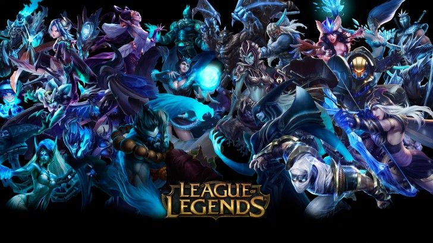

Sándor Balázs Hobbijai
Hobbijaim
Sportolás:
Számítógépes játékkal való játszás.
Labdarúgás:

Kosárlabda:

Röplabda:
CS:GO:
Leauge of Legends:
További infót itt találhatsz rólam.
Céljaimért katt ide.
Adatokért rólam katt ide.
A bevezetésért katt ide.
A napi rutinomért katt ide.